With MIRO version 2.1, the Hypercube Mode is deprecated and and no longer exists as a separate mode. You can now submit Hypercube jobs from the Base Mode if you are using GAMS MIRO with a GAMS Engine backend (GAMS MIRO Server or GAMS MIRO Desktop - boosted by GAMS Engine). You can find the most recent documentation here.
Hypercube Mode
Introduction
Note:
MIRO allows the user to load input data, manipulate it, start & stop the GAMS optimization run, inspect the results as well as save, manage and compare different scenarios.
Beside this Base Mode, there is another mode which allows to configure and evaluate so-called Hypercube jobs. A Hypercube job describes the automated execution of a certain number of automatically generated scenarios that differ with regard to their parameterization.
Let's get back to our transport example: In the MIRO Base Mode, among other things, we saw that we can determine the freight costs for the transportation of goods from suppliers to markets. We also learned that MIRO allows us to submit this particular scenario and fetch the results once its done.
But what if we want to solve a multitude of such scenarios with different parameterizations? Say, we are interested in finding out how our model behaves with regard to a change in freight costs as well as other input parameters? To avoid having to configure and solve each scenario individually, there is the Hypercube Mode. The Hypercube Mode allows us to automatically solve and examine a subset of the parameter space of our model. This is done by varying all scalar model parameters (zero-dimensional GAMS parameters) within a given range. As a consequence, a large number of scenarios can be configured and analyzed at once.
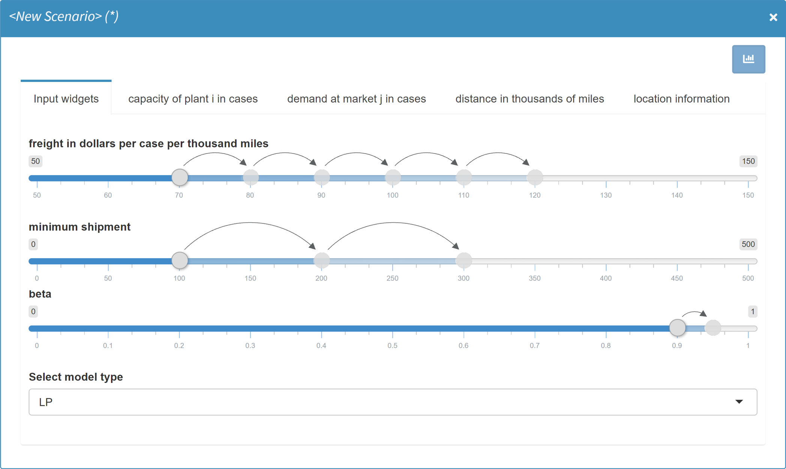
Results of such Hypercube jobs can be stored and inspected directly in MIRO. Custom scripts (e.g. a Jupyter Notebook) can be used to run analyses on multiple scenarios at once. Also, the Automated Performance Analysis & Visualization tool PAVER is integrated. A direct comparison of scenarios in the scenario view (via split / tab view) is available as well. You might also want to download a given subset of the scenarios you stored in MIRO and analyze them with the help of external tools.
In short, the module presented here is designed to efficiently generate, store and analyze a multitude of scenarios.
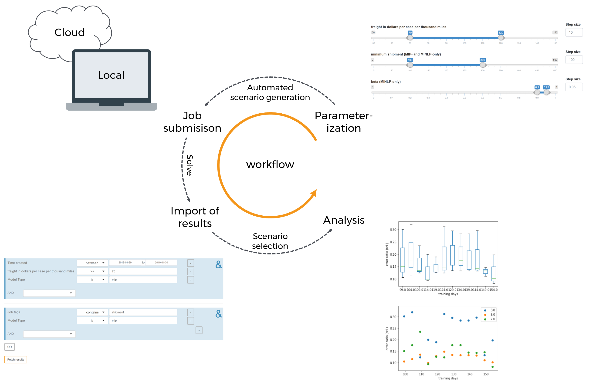
Overview
Before using the Hypercube Mode the first time MIRO has to know which files belong to the GAMS model. This is primarily the main model file, but also all files necessary to calculate all inputs and outputs, e.g. files that are included in the model. The reason for this is that model calculations in Hypercube Mode are always executed in a temporary directory. For this purpose, the files assigned to the GAMS model are copied to the temporary directory so that they are available during the calculations. Read more on how you can tell MIRO which files belong to your GAMS model via the model assembly file.
Just like the Base Mode, the Hypercube Mode can be started directly from GAMS Studio or the command line. For the latter, the environment variable MIRO_MODE=hcube needs to be set instead of MIRO_MODE=base. The other steps (see here) remain the same. MIRO automatically processes and adjusts your Base Mode configuration so that it will work in Hypercube Mode.

Visually, the Hypercube interface hardly differs from the regular mode. After starting the application, the following familiar startup screen appears.
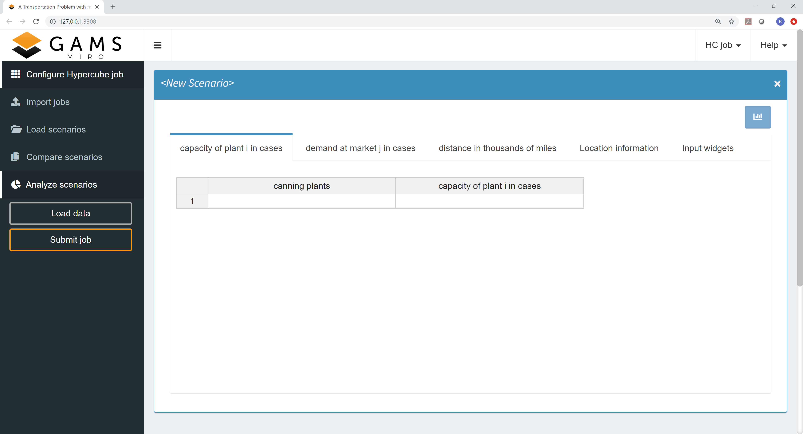
The navigation menu on the left side now consists of
the following sections:
-
Configure Hypercube job:
Configuration of Hypercube jobs. -
Import results:
Overview and import of submitted Hypercube jobs. -
Load results:
"Slice & dice" the database to fetch those scenarios you are interested in. -
Compare scenarios:
Module known from the MIRO Base Mode for the comparison of scenarios in split-, tab- and pivot view. -
Analyze scenarios:
Scenario analyses with custom scripts or with the integrated performance analysis tool PAVER. -
Load data:
Loading input data for a Hypercube job. This can be a GDX container, an Excel spreadsheet or existing data from the database. -
Submit jobs:
Submission of a new Hypercube job.
Scenario generation
A scenario is characterized by a particular set of model input (and output) parameters. If, for example, for a run of the transport model, the freight cost is set to 90 and the minimum shipment of goods is set to 100, then this parameterization characterizes the scenario (together with the other input and output parameters as well as attachments). The Hypercube configuration discussed here makes it possible to automatically submit several of those scenarios at once.
The configuration of such a Hypercube job for a model is done in the section Configure Hypercube job. Let's take a look at an example.
Configuration of a Hypercube job
If you compare the display of input data between a single run in MIRO Base Mode and the configuration of a Hypercube job, you will notice that some of the input widgets have been automatically transformed:
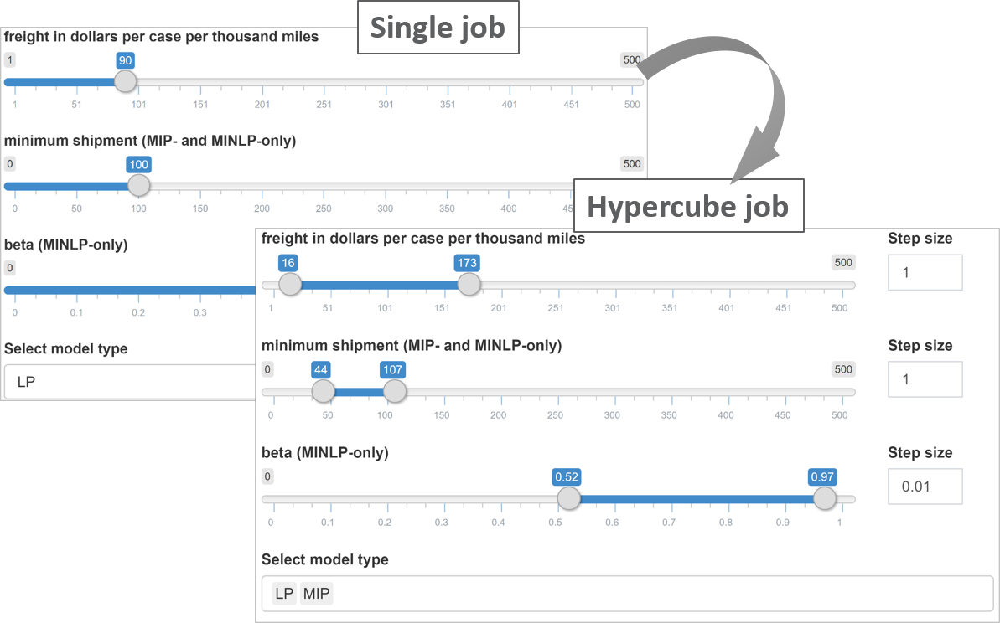
When we set up a run in the MIRO Base Mode, we could specify the freight cost as well as the minimum amount of goods to ship. Those are zero dimensional values. The very same scalars can now be specified within a given range: The sliders we specified in the Base Mode have now become slider ranges. In addition, we can set a step size for each slider range. In addition, the single dropdown menu for selecting the problem type has been replaced by a multi dropdown menu.
Tip:
Input widgets you defined for your scalars in the Base Mode are automatically expanded in the Hypercube Mode (e.g. a slider in Base Mode is expanded to a slider range in Hypercube Mode and a single-dropdown menu is expanded to a multi-dropdown menu etc.).
The table below gives an overview of the widgets and their different appearance in the base and the Hypercube Mode.
| Single mode | Hypercube Mode |
|---|---|
| Single slider | Slider range with step size selection |
| Slider range | Slider range with step size and combination-type selection |
| Single dropdown menu | Multi dropdown menu |
| Multi dropdown menu | Not supported yet |
| Checkbox | Multi dropdown menu with options yes and no |
| Date selector | Date selector |
| Date range selector | Date range selector |
| Text input | Text input |
| Numeric input | Numeric input |
| Parameter table | Parameter table |
The transformation of input widgets has the following implication for the submission of Hypercube jobs: Unless explicitly specified in the MIRO configuration of the model, each scalar is expanded and the cartesian product over all scalars defines a Hypercube job. In other words: All combinations are generated from the configuration selected by the user and each of those combinations is the basis of what we call a scenario in the Base Mode.

In the example, the slider for freight in dollars per case per thousand miles was set by us to a range from 75 to 150 with a step size of 5. The slider configured in this way leads to 16 different variants.
- Variant 1: freight = 75
- Variant 2: freight = 80
- Variant 3: freight = 85 [...]
- Variant 16: freight = 150
For the scalar minimum shipment the slider was set to a range between 20 and 200 with a step size of 20. The resulting variants would therefore be:
- Variant 1: number of days for training = 20
- Variant 2: number of days for training = 40
- Variant 3: number of days for training = 60 [...]
- Variant 10: number of days for training = 200
The third slider for the scalar parameter beta is not set to a range but to a single value. Due to the non-existent variation of the scalar, only one variant results from it. The same is true for the last widget, a multi dropdown menu where we specify to only consider the MIP version of our model.
The cartesian product that results from the combination of all variations is now calculated: It is created from the different variants of the symbols freight in dollars per case per thousand miles (16), minimum shipment (10), beta (1) and Select model type (1) resulting in 16 x 10 x 1 x 1 = 160 individual scenarios.

It becomes clear that the number of scenarios
resulting from a particular Hypercube job
configuration can increase rapidly with the number of
scalar that are expanded. Depending on how
computationally intensive the underlying GAMS model
is, the scenarios should be carefully configured.
You may want to restrict certain input widgets
to be transformed: This can be done in the MIRO
Configuration Mode
by unchecking the widget-specific option
Should element be expanded automatically in
Hypercube Mode?.

When activated, this configuration has the consequence that the scalar can still be selected in the scenario generation but with a regular slider instead of a slider range.
Multidimensional Symbols:
Unlike scalar values, multidimensional symbols such as sets, parameters and multidimensional singleton sets cannot be varied within a Hypercube job configuration. The data remains fixed in every created scenario of a job. However, this does not mean that Hypercube Mode can only be used for zero dimensional symbols. In order to be able to vary data of multidimensional symbols using the Hypercube job configuration, this must be implemented in the GAMS model itself. For example, you can use a scalar in the model and assign different data to a multidimensional parameter in the model depending on the value of that scalar. If this scalar value is now varied during a Hypercube job, this also affects the multidimensional parameter.
Job submission: general
Once you are happy with the set up of your Hypercube job, you can submit it by clicking: Submit job. This triggers the expansion of all scenarios resulting from your configuration and sets up your Hypercube job.
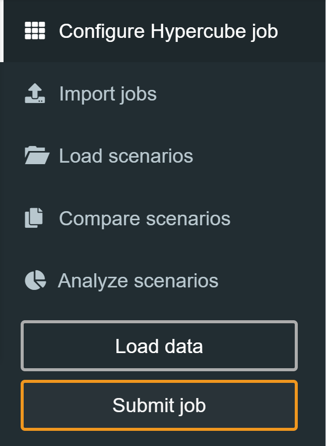
Note:
The maximum number of scenarios that can be submitted in one job is limited to 10 000.
Note:
Currently, when executing Hypercube jobs locally (without GAMS Engine), your model must be prepared to work with idir. MIRO creates a local working directory for each scenario and executes your model from this directory, while referring to the main gms file via idir1.
You can debug your model by submitting a Hypercube job, navigating to the directory of your Hypercube job (C:\Users\<username>\.miro\hcube_jobs\<modelname>\1 on Windows, ~/.miro/hcube_jobs/<modelname>/1 on macOS/Linux) and executing the file jobsubmission.gms file from GAMS Studio.
MIRO also looks into the database where your previous
runs are stored and checks whether a subset of the
scenarios you want to commit have already been saved. If
it finds results from previous runs, MIRO asks if it
should commit only the scenarios that have not yet been
executed, or if it should submit all of them again.
There are a number of reasons why you might want to
re-submit certain scenarios. We will elaborate on these
reasons in the next section that discusses the technical
details of how MIRO sets up a Hypercube job. If you are
reading this documentation for the first time, you might
want to skip this next advanced (sub)section. If you are
interested, just click on the headline.
When we decided which of the scenarios to submit, we have two options of HOW to submit the job:
Automated job submission
General
All scenarios of the Hypercube job are calculated automatically on the machine running MIRO.
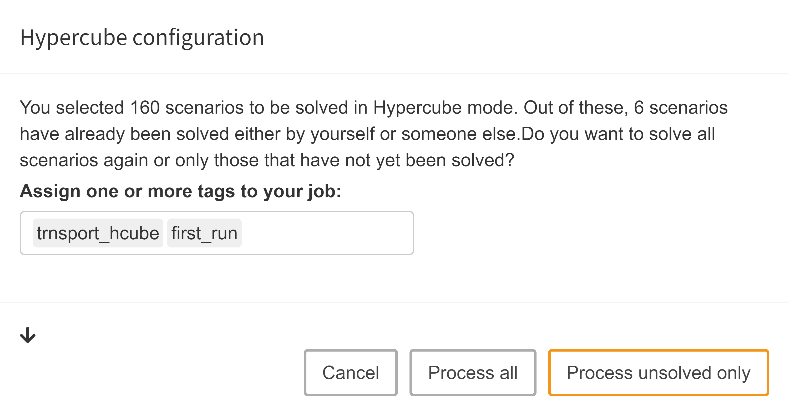
Job tags: When submitting a Hypercube job automatically, we can optionally specify job tags. Job tags are an identifier attached to all scenarios of a Hypercube job. They can help you identify scenarios of a certain job or a group of jobs with similar attributes. This means that you can use those tags as part of your database queries in order to easily find certain scenarios that you are interested in. Additionally, job tags can also be used to compare different groups of scenarios that you are interested in via PAVER.
Import results
When we submit the Hypercube job automatically, it
will be executed in the background. Without going into
too much detail, what happens here is simple:
First, a
Hypercube file
which contains all scenario configurations is created
by MIRO. This file gets converted into executable GAMS
calls, which are then processed. The script which is
responsible for this conversion is located in the
/resources folder of the
MIRO installation directory and can be customized as
needed. More about these steps in the section on
manual execution
of a Hypercube job.
Once a Hypercube job has been submitted, it is shown in the Import results section which can be accessed via the sidebar menu. There, all jobs are listed that are still running or whose results have not yet been imported.

The overview shows for each submitted job the owner, the submission date and the (optional) specified job tag(s). In addition, the current status (scheduled, running or completed) is visible. The progress of a run can be displayed by clicking on the corresponding show progress button and results that have not yet been loaded into the database or are still pending can be discarded. As soon as a job has finished, the results can be loaded into the database with a click on Import.
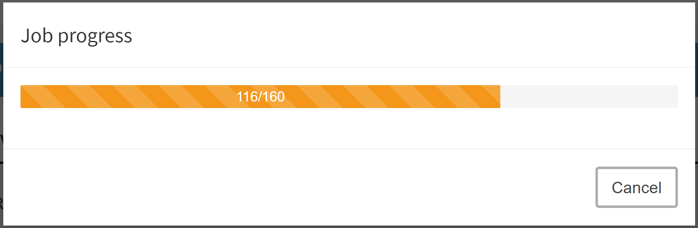
If you want to see jobs that you previously imported or discarded, you can do so by clicking on Show history:

Once a job has been imported, the results are stored in the database.
Manual job submission
This option is especially interesting if the calculations are not to be performed on the same machine on which MIRO is running, e.g. some compute cluster.
Note:
GAMS version 30.2 or later must be installed on the system running the job.
Download zip archive
If we want to execute a Hypercube job manually, we can download a ZIP archive with all needed data by clicking on Submit job → Process job manually.

The archive has the following contents:
- transport.gms
model file -
static folder
This folder contains all non-scalar (thus multidimensional) input data in form of a GDX file. As explained here, this data remains the same for all scenarios of a Hypercube job. -
hcube.json
Hypercube file. Contains all variable information on the scenarios to be calculated (scenario ID, command line arguments). -
transport.pf
This parameter file contains options which must be set in order to solve the scenarios of a hypercube job. You should not touch this file. -
hcube_submission.gms
File used in automated job submission to generate a script based on the contents of the hypercube file and all static data, which then can be executed in GAMS. - In addition, all directories and files that have been assigned to the model by the user (see model assembly file) are also included.

Let's have a brief look at the hcube.json file which originates from the already shown configuration above:
{
"jobs":[ {
"id": "e505eb77f2fed92ecb6c7609a6873974ea87d69b620a7ca9aa8d6a1a62e7159b",
"arguments": [
"--HCUBE_SCALARV_mins=20",
"--HCUBE_SCALARV_beta=0.97",
"--HCUBE_SCALARV_f=75",
"--type=\"mip\""
]
},
{
"id": "834cc2ff77d5cddc70f6462263a500ab43d22f084a0d98ff1fd8cfc354c8e6ec",
"arguments": [
"--HCUBE_SCALARV_mins=40",
"--HCUBE_SCALARV_beta=0.97",
"--HCUBE_SCALARV_f=75",
"--type=\"mip\""
]
},
{
"id": "867432ac65a22a251ee6fca0ce5eb7ba45195538e389406abe7593f21b8255c4",
"arguments": [
"--HCUBE_SCALARV_mins=60",
"--HCUBE_SCALARV_beta=0.97",
"--HCUBE_SCALARV_f=75",
"--type=\"mip\""]
},
[...]
]
}
Each object contains the information needed for exactly one scenario, i.e. each variable scenario configuration is stored in a separate JSON object:
-
ID:
Each job has an individual ID in form of a hash value which used to (almost) uniquely identify a scenario. To learn more about how this hash is generated, read more on how MIRO identifies Hypercube jobs here. -
Arguments:
The arguments contain information on all scalar values, i.e. GAMS Scalars, scalar Sets, double-dash parameters and GAMS Options. This is where the individual scenarios differ.
Run the Hypercube job
To be able to calculate all configured scenarios in GAMS, we need to convert the scenario-specific information provided in the file hcube.json together with the static data into an executable GAMS script. Additionally, the results need to be saved in such a way that MIRO can validate and import them. The file hcube_submission.gms is a simple script which is used in the automated job submission for this purpose and which can also be used here.
Note:
In case you need to customize this script e.g. because you want to send the GAMS jobs to some sort of compute server, you will need to adjust this file accordingly. Note that the folder structure of the downloaded ZIP file corresponds to the structure assumed in the file hcube_submission.gms.
By running the hcube_submission.gms we can generate a script based on the contents of the hcube.json file and all static data, which then can be executed in GAMS. This is how the resulting file jobsubmission.gms looks like.
$if dexist 4upload $call rm -r 4upload
$call mkdir 4upload
$call cd 4upload && mkdir tmp0
$if errorlevel 1 $abort problems mkdir tmp0
$call cd 4upload/tmp0 && gams "C:\Users\Robin\Documents\.miro\hcube_jobs\transport\1\transport.gms" --HCUBE_SCALARV_mins=20 --HCUBE_SCALARV_beta=0.97 --HCUBE_SCALARV_f=75 --type="mip" pf="C:\Users\Robin\Documents\.miro\hcube_jobs\transport\1\transport.pf"
$if dexist e505eb77f2fed92ecb6c7609a6873974ea87d69b620a7ca9aa8d6a1a62e7159b $call rm -r e505eb77f2fed92ecb6c7609a6873974ea87d69b620a7ca9aa8d6a1a62e7159b
$call cd 4upload && mv tmp0 e505eb77f2fed92ecb6c7609a6873974ea87d69b620a7ca9aa8d6a1a62e7159b
$onecho > "%jobID%.log"
1/160
$offecho
$call cd 4upload && mkdir tmp1
$if errorlevel 1 $abort problems mkdir tmp1
$call cd 4upload/tmp1 && gams "C:\Users\Robin\Documents\.miro\hcube_jobs\transport\1\transport.gms" --HCUBE_SCALARV_mins=40 --HCUBE_SCALARV_beta=0.97 --HCUBE_SCALARV_f=75 --type="mip" pf="C:\Users\Robin\Documents\.miro\hcube_jobs\transport\1\transport.pf"
$if dexist 834cc2ff77d5cddc70f6462263a500ab43d22f084a0d98ff1fd8cfc354c8e6ec $call rm -r 834cc2ff77d5cddc70f6462263a500ab43d22f084a0d98ff1fd8cfc354c8e6ec
$call cd 4upload && mv tmp1 834cc2ff77d5cddc70f6462263a500ab43d22f084a0d98ff1fd8cfc354c8e6ec
$onecho > "%jobID%.log"
2/160
$offecho
$call cd 4upload && mkdir tmp2
$if errorlevel 1 $abort problems mkdir tmp2
$call cd 4upload/tmp2 && gams "C:\Users\Robin\Documents\.miro\hcube_jobs\transport\1\transport.gms" --HCUBE_SCALARV_mins=60 --HCUBE_SCALARV_beta=0.97 --HCUBE_SCALARV_f=75 --type="mip" pf="C:\Users\Robin\Documents\.miro\hcube_jobs\transport\1\transport.pf"
$if dexist 867432ac65a22a251ee6fca0ce5eb7ba45195538e389406abe7593f21b8255c4 $call rm -r 867432ac65a22a251ee6fca0ce5eb7ba45195538e389406abe7593f21b8255c4
$call cd 4upload && mv tmp2 867432ac65a22a251ee6fca0ce5eb7ba45195538e389406abe7593f21b8255c4
[...]
We can see the commands for running through the first three scenarios of the hcube.json file. A separate (temporary) folder is created for each scenario to be calculated. In the main GAMS call all arguments contained in the hcube.json file which belong to the scenario are listed as command line parameters.
$call [...] gams "[...]\transport.gms" --HCUBE_SCALARV_mins=20 --HCUBE_SCALARV_beta=0.97 --HCUBE_SCALARV_f=75 --type="mip" [...]
GAMS Scalars can usually not be set via a GAMS call, but are defined in the model. In order to be able to set scalars via the command line, MIRO adds a special prefix: --HCUBE_SCALARV_<scalar-name>=<scalar-value>, e.g. --HCUBE_SCALARV_f=90 for scalar f and a value of 90. To continue this example, if a GAMS model is called with IDCGDXInput (which is done here using the pf file) and the compile-time variable --HCUBE_SCALARV_f=90, a scalar f is searched in the list of symbols declared in your GAMS model and, if declared, set to the value of the compile-time variable, i.e. 90. The set text of a singleton set is communicated via the prefix --HCUBE_SCALART_.
Note:
The GAMS options and double-dash parameters associated with a scenario are stored in MIRO's internal database. However, the information about them is lost when a scenario is exported as a GDX file. This is especially relevant in Hypercube Mode, where data exchange is done via GDX files. We therefore recommend using singleton sets instead of command line parameters. Both the element label and the element text of a set can be migrated to compile time variables using the Dollar Control Options eval.Set, evalGlobal.Set, and evalLocal.Set.
Besides this scenario-specific data, a GDX file containing all static data is included at the end of the $call as part of a pf file:
$call [...] pf="[...]\transport.pf"
execMode=0
IDCGDXOutput="_miro_gdxout_.gdx"
IDCGenerateGDXInput="_miro_gdxin_.gdx"
IDCGDXInput="..\..\static\_miro_gdxin_.gdx"
trace="_sys_trace_transport.trc"
traceopt=3
The pf file also contains the command to create a trace file. In case you are interested in doing performance analysis using PAVER, you need to make sure to generate trace files for your scenarios.
After the calculations, the results of a scenario (input and output data) are stored in a folder named by its ID.
Note:
As already mentioned, the hcube_submission.gms file that is included in the archive you downloaded provides you with a template (in this case using Python) to automatically generate the jobsubmission.gms script shown above. Depending on your infrastructure, you can either extend this file or write a new one from scratch. Irrespective of whether the provided script or a custom method is used, you need to make sure that the results you retrieve are structured according to the rules in order to import them back into MIRO.
Import rules
At the end of the calculations, the results should be available in the form of a ZIP archive. For MIRO to accept the archive as a valid set of scenarios, the input and output data records for a certain scenario must be available as GDX files. These must be located in a folder named after the hash value of the scenario and located in the root directory of the zip file.

There are some files that must exist in order for MIRO to accept a particular scenario. Other datasets are optional and don't have to be included in the zip archive. The mandatory files are:
-
_miro_gdxin_.gdx
Scenario input data (GDX file) -
_sys_trace_<modelname>.trc
Trace file of the scenario run. This file contains numerous run statistics which are used for the the integrated performance analysis tool PAVER. The Hypercube job file already contains the GAMS options for generating the trace file automatically. In case you specified (in your MIRO app configuration) that you are not interested in trace information (optionsaveTraceFileset tofalse), mustn't be included in your scenario data. You can find more information about the trace file here.
These files are generated automatically when you use
the
hcube_submission.gms
file. If scenario data does not contain all mandatory
files, this scenario will be ignored and thus not be
stored in the database. If results are available,
beside the GDX with input data also one with output
data is created, namely the GDX
_miro_gdxout_.gdx. This file contains all output parameters declared
in the GAMS model between the
$onExternalOutput
/
$offExternalOutput
tags. If a model calculation is aborted, this GDX is
not generated automatically.
The following figure summarizes the steps required to move from the downloaded archive created by MIRO to a ZIP archive that you can import back into MIRO:

Import results
Once a Hypercube job finished execution, it can be imported and stored in MIRO's database via the import results module. In the bottom right corner of the window, click on Manual import.
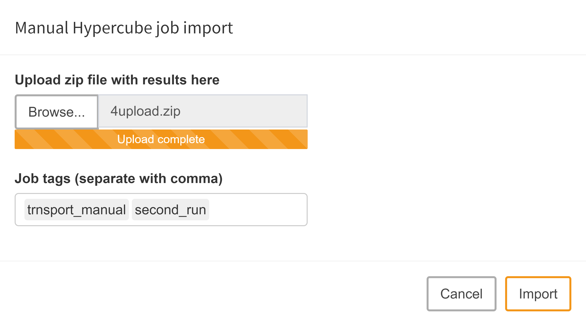
Upload Zip file with results:
A dialog pops up that lets you choose the zip archive with the Hypercube job results. Note that you probably want to assign job tags here as well.
With a click on upload the archive is evaluated and stored in the MIRO database if the contained data is valid.
Analyses
Scenario selection
Scenarios that have been imported into the MIRO database can be used for subsequent analyses. The load scenarios module is a graphical way to build database queries. It gives you a lot of flexibility and power to get exactly those scenarios you are interested in. Let's take a look at an example:
In our transport model, we have three input scalars that we import from MIRO:
$onExternalInput
Scalar f 'freight in dollars per case per thousand miles' / 90 /
minS 'minimum shipment (MIP- and MINLP-only)' / 100 /
beta 'beta (MINLP-only)' / 0.95 /;
$offExternalInput
Of particular interest are scalar inputs and outputs, as you can easily use them to filter your data. More specifically, it is possible to filter your database tables by the following GAMS symbols:
- Scalars
- Singleton sets
- Double-dash parameters
- GAMS options
Note:
A scenario originating from a Hypercube job has no information about GAMS options and double-dash parameters (read more here). Therefore, a filter for these compile-time variables can only be applied to Base Mode scenarios.
In addition to these scenario-specific filters, scenario metadata such as the optionally defined job tags and the creation date can also be used in a database query. You can combine any of these filters with the logical operators AND and OR (see figure below).
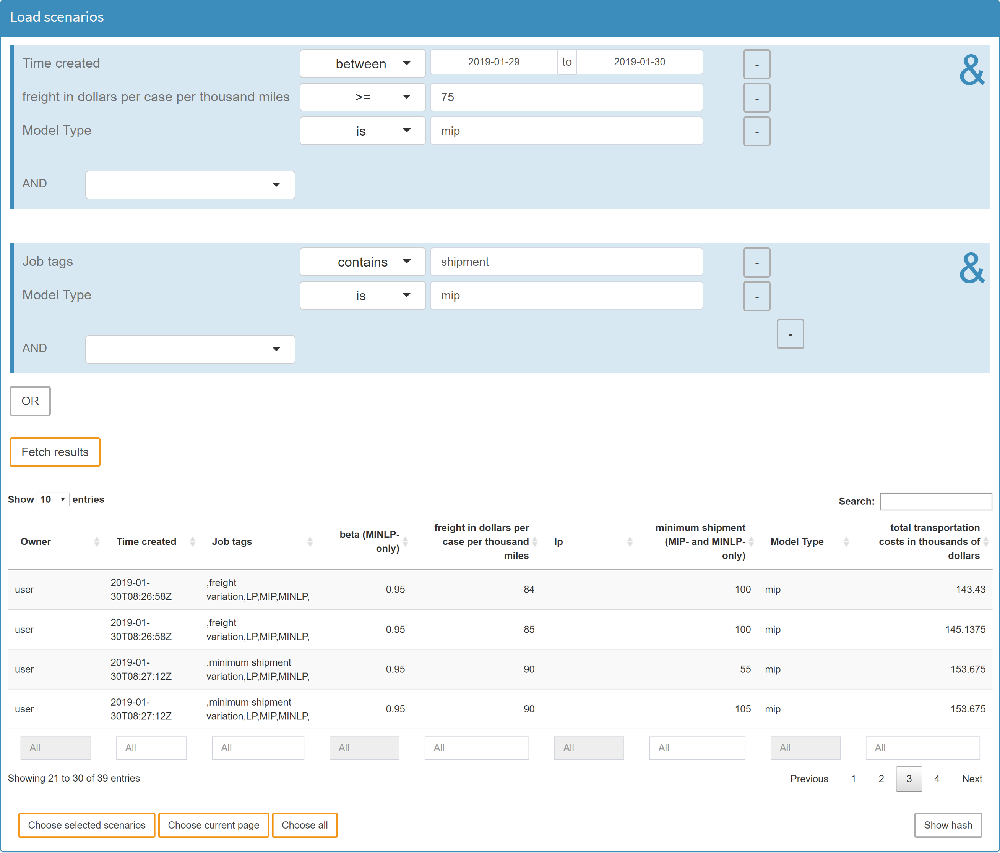
Tip:
You can search for empty entries (NA) by leaving the field empty if it is a numeric field, or by using the exists and doesn't exist operators for character fields!
Once you have set all the filters you are interested in, you can execute your query by clicking on the Query database button. After the results have been retrieved, the page will be updated and you will see a table with the scenarios that correspond to your query. In the resulting table, you again have the option of selecting the scenarios that really interest you.
Tip:

If you want to load a scenario that was part of a Hypercube job into the Base Mode, you can get its hash value by clicking Show Hash in the lower right corner. Note that you can only show the hash of one scenario at a time, so don't select more than one row before clicking this button.
To load the scenario in Base mode, switch to that mode, click on Load data and go to tab Hypercube.
Whenever you have chosen the scenarios you want to compare, you will be asked to choose a comparison/analysis method:

-
Delete scenarios:
Delete selected scenarios from MIRO. -
Download data:
Download scenario data for external analysis. -
Analyze:
An interface is available for your own scenario analysis. Also, the automated performance analysis tool PAVER is integrated. -
Compare:
Interactive scenario comparison: Compare different scenarios directly in split-, tab- or pivot view. Best suited for a small number of scenarios to compare (maximum number of scenarios allowed: 10).
The various analysis methods are described in detail below:
Internal Analysis
Scenario comparison:
The scenario comparison module is used to directly compare the input and output data for a small number of scenarios. It is pretty much identical to the one in the Base Mode: This means that the charts you configured in the Base Mode will also work in the Hypercube Mode. However, there are some subtle differences: A scenario that resulted from a Hypercube job does not have a name assigned (the name is the 256-bit SHA-2 hash). As the hash values are hard to distinguish for the human eye, MIRO will assign a number to each scenario you import. This number is simply a counter that increments every time you load a new scenario and resets when you close the current session. You might be interested in seeing two scenarios that you find particularly important, side by side: all you need to do is remember the numbers that were assigned to those two scenarios and switch to the split view comparison mode. If you load a scenario here, you will notice that there is a new local tab. Here you can choose any of the scenarios that is already opened in the tab view comparison mode:

Custom scripts:
You can also have MIRO execute special analysis scripts that are tailored to your application. To learn more about how to set up such a script, read the section about configuring custom analysis scripts.
To run a custom analysis, select the scenarios you want to analyze and click on "Analyze". The following dialog opens:
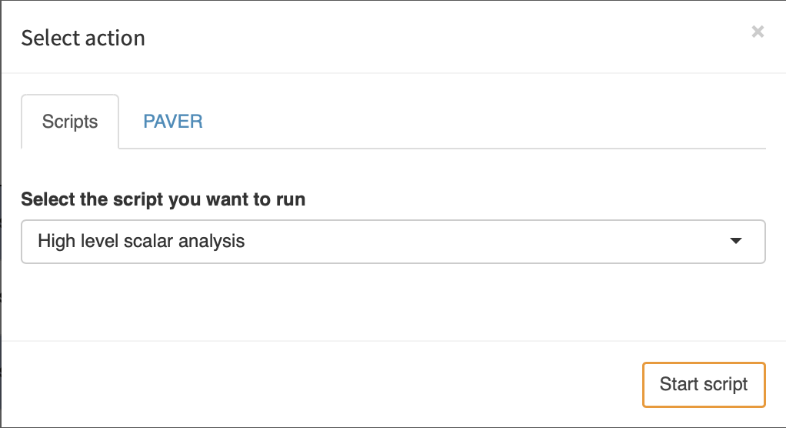
We select the script we want to run and click on "Start script". Once the script finished, the results are read by MIRO and displayed:

PAVER:
PAVER is an Open Source Environment for Automated Performance Analysis of Benchmarking Data. This tool is designed to simplify the task of comparing and visualizing solver performance data (solution times, return codes etc.) by providing a variety of performance measurement tools with practical and simple visualization capabilities. This way you can get some performance summaries over multiple runs or detect inconsistencies. [Bussieck, Michael R., Steven P. Dirkse, and Stefan Vigerske. "PAVER 2.0: an open source environment for automated performance analysis of benchmarking data." Journal of Global Optimization 59.2-3 (2014): 259-275, link].
PAVER bases its analysis entirely on the GAMS
trace files
that were generated during your model runs. Since PAVER
was originally designed to compare multiple solvers
based on a number of model instances (e.g. the
MIPLIB), we keep this vocabulary but use it in a more
abstract way: A "solver" in terms of MIRO is a set of
attributes that you would like to compare. These
attributes can be any criterion you could also use to
filter your database: the input and output scalars
defined in your model as well as some metadata such as
the job tags you assigned. Based on these attributes,
the scenarios you selected will be split into groups.
The remaining attributes define a "model".
Note:
PAVER requires Python to be installed. For this purpose, it searches for a corresponding entry in the PATH. Make sure that Python is in there. The following Python packages must also be installed: matplotlib, numpy, pandas.
Note: Pandas ≥ 0.25 does not work. Paver uses Pandas' Panel, which was removed with Pandas 0.25.
Let's assume you want to compare how sensitive your GAMS model is with regard to computation power: You therefore generate a Hypercube job with multiple scenarios and solve it once on your local machine and then again on a High-Performance Computing Cluster. You assign the tag "HPC" to the job solved on the cluster and the tag "Local" to the one that was solved on your local machine. When you start PAVER, you will be asked to select the attributes that define your "solver". Since we want to compare the performance statistics of the job executed on our local machine with the HPC, we select Job Tags as the attribute for comparison:
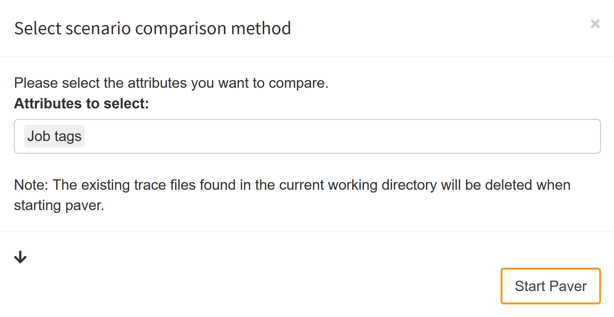
What happens when we now launch PAVER is that the trace data collected from the selected scenarios is split into the groups "HPC" and "Local". The "models" are named after the remaining attributes. Let's assume that your model has two input scalars: cost_coeff and demand_coeff. In your Hypercube task, you have varied these coefficients in a range between 2 and 12 with a step size of 2 and a range between 90 and 100 with a step size of 2. The names of your "models" would therefore be: "2\90", "2\92", ..., "4\100"; note that different attributes are delimited with a backward slash. Each combination of input scalars results in a new "model":
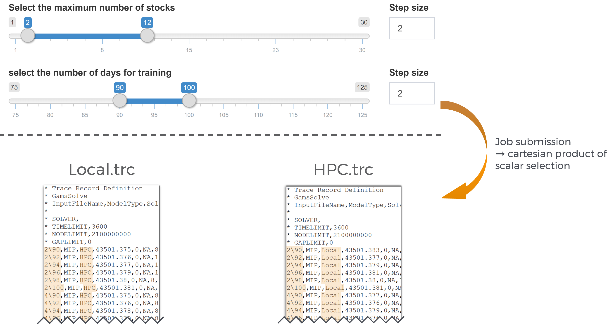
Per default, all input scalars are what we call model-defining: They contribute to the PAVER "model" name. This means that when the scalar changes, PAVER would regard it as an new, independent model. Output scalars and metadata attributes are ignored meaning that different values would still be regarded as the same "model". If you want to change this default setting, there is a small arrow in the lower left corner of the PAVER set-up dialog box that lets you do so:
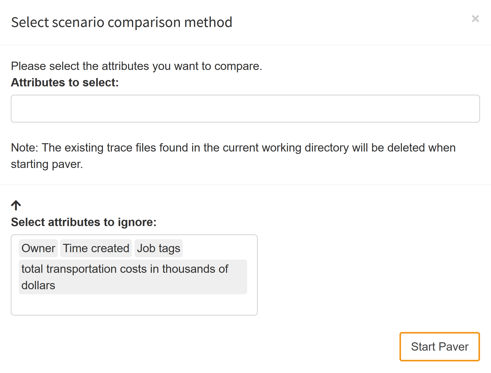
Basically, scenarios can be compared on the basis of:
- Scalar input data
- Scalar output data
- Job tags
- Date of creation of a Hypercube job
- Owner of a Hypercube job
Once you have decided which attributes you want to use to compare your scenarios, you can start Paver. The results of your analysis could look like this:

External Analysis
In case you want to use your own tools to analyze the scenarios of interest, MIRO gives you the option to download the slice of data you selected. The structure of the downloaded data is very similar to the one you upload when you execute your Hypercube jobs manually: Every scenario is located in its own folder, where the name of the folder is the hash value of the scenario. Inside this folder, you will find the input and output datasets (GDX) as well as the trace data (in case it was stored).
Here you can find an example of such an external analysis. The data of selected scenarios were analyzed using R in combination with Jupyter notebook.